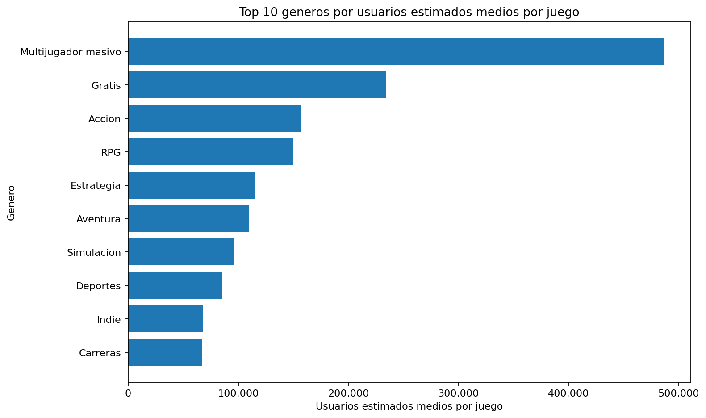
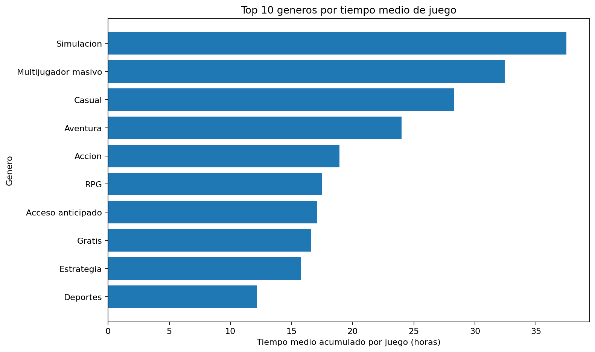
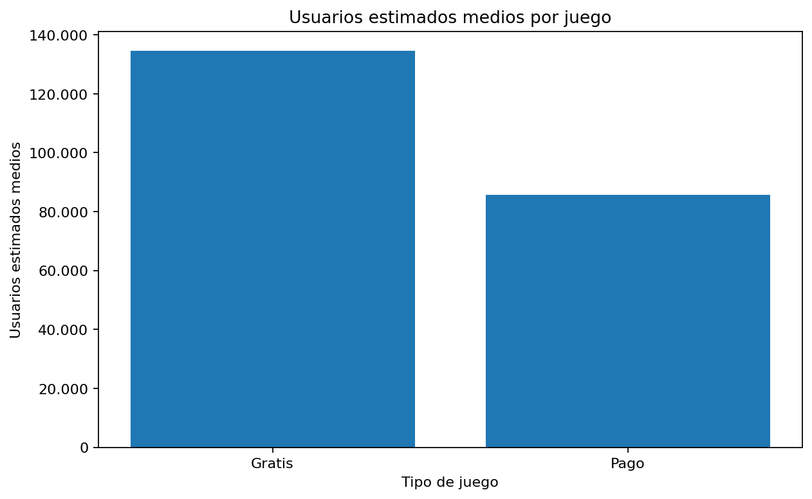
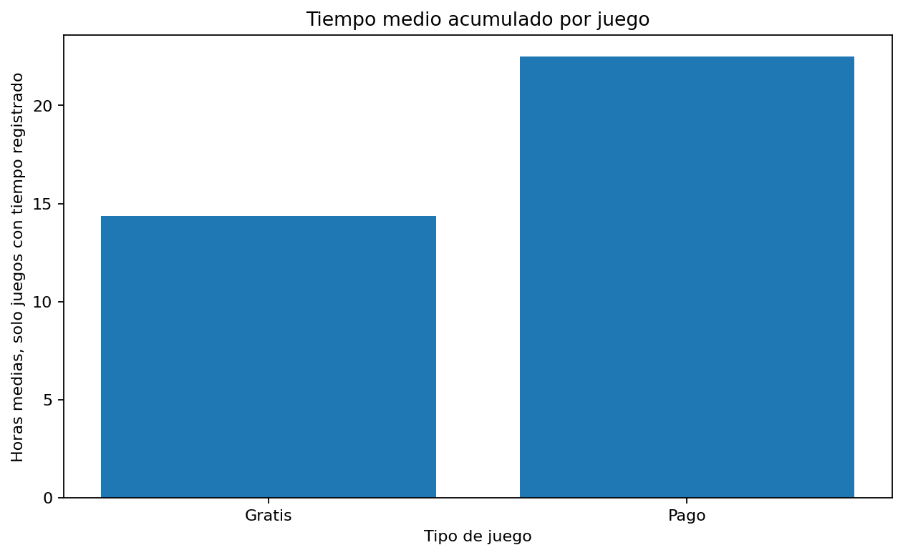
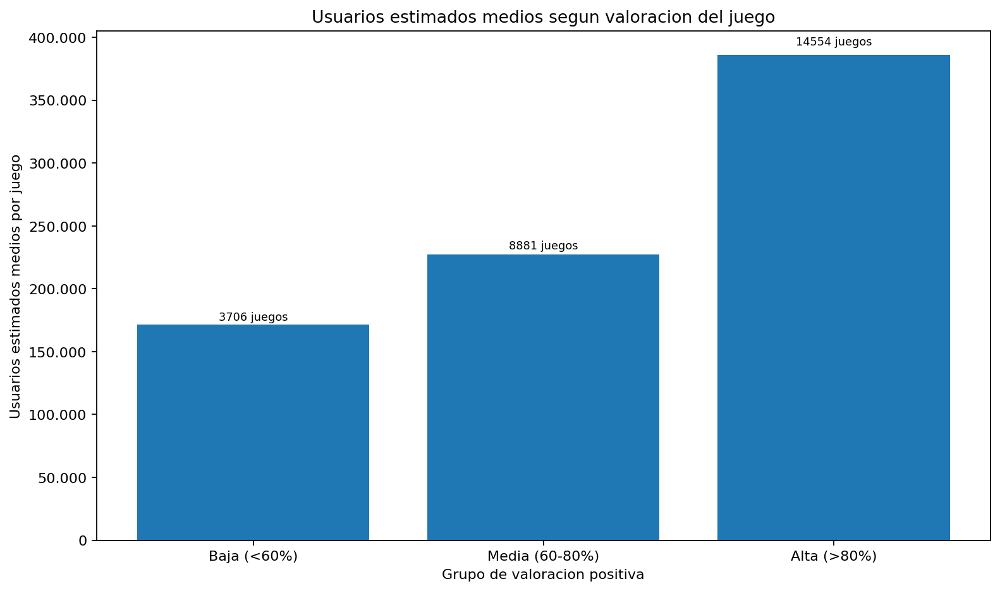
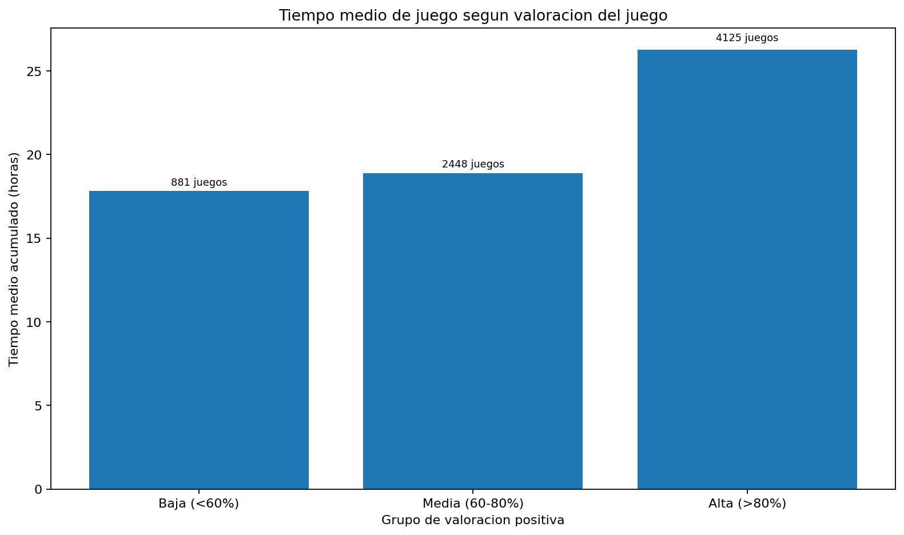

Este proyecto analiza un dataset de videojuegos de Steam de marzo de 2025. El objetivo principal es explorar qué características se relacionan con la popularidad, el tiempo de juego y la valoración de los videojuegos.
El análisis se ha dividido en tres bloques:
Las preguntas principales del proyecto son:
El archivo original utilizado es:
data/raw/games_march2025_full.csv
El dataset contiene información sobre juegos de Steam, incluyendo:
El archivo original contiene columnas que necesitan transformación antes de poder analizarlas correctamente.
Las principales transformaciones realizadas han sido:
genres de texto a listas reales de géneros.estimated_owners de rango a valor numérico aproximado usando el punto medio.total_resenas, sumando reseñas positivas y negativas.proporcion_positivas, dividiendo reseñas positivas entre total de reseñas.es_gratis, para separar juegos gratuitos y juegos de pago.Los archivos procesados principales son:
data/processed/juegos_steam_limpio_base.csvdata/processed/resumen_generos.csvdata/processed/resumen_generos_min_1000_juegos.csvNotebook relacionado:
notebooks/01_analisis_generos.ipynb
Para analizar qué géneros tienen más usuarios, se ha utilizado usuarios_estimados_media, no usuarios_estimados_total.
Esto es importante porque usuarios_estimados_total suma todos los juegos de un género y puede generar cifras muy infladas. En cambio, usuarios_estimados_media responde mejor a la pregunta:
¿Cuántos usuarios estimados tiene de media un juego de este género?
Filtrando géneros con al menos 1000 juegos, los géneros con más usuarios estimados medios por juego son:
| Género | Usuarios estimados medios por juego | Cantidad de juegos |
|---|---|---|
| Multijugador masivo | 486.198 | 2.129 |
| Gratis | 233.896 | 8.873 |
| Acción | 157.349 | 36.894 |
| RPG | 150.048 | 16.350 |
| Estrategia | 114.714 | 17.380 |

El dataset contiene muchos juegos con tiempo medio igual a 0. Por eso, para analizar el tiempo de juego se ha usado principalmente la columna:
tiempo_medio_horas_solo_con_tiempo
Esta columna calcula la media solo sobre juegos con tiempo registrado mayor que 0.
Los géneros con mayor tiempo medio de juego son:
| Género | Tiempo medio en horas | Juegos con tiempo registrado |
|---|---|---|
| Simulación | 37,47 | 1.929 |
| Multijugador masivo | 32,42 | 303 |
| Casual | 28,32 | 2.498 |
| Aventura | 23,99 | 3.381 |
| Acción | 18,92 | 3.647 |

Los géneros con más usuarios medios por juego no son necesariamente los géneros con mayor tiempo medio.
Multijugador masivo destaca por usuarios medios por juego, mientras que Simulación destaca por tiempo medio acumulado. Esto sugiere que popularidad y tiempo de juego no miden exactamente lo mismo.
Notebook relacionado:
notebooks/02_gratis_vs_pago.ipynb
En este bloque se comparan juegos gratuitos y juegos de pago en usuarios estimados, tiempo de juego y valoraciones.
| Tipo de juego | Cantidad de juegos | Usuarios estimados medios | Tiempo medio en horas | Valoraciones positivas medias | Precio medio |
|---|---|---|---|---|---|
| Gratis | 19.420 | 134.488 | 14,37 | 75% | 0,00 |
| Pago | 75.528 | 85.688 | 22,49 | 75% | 8,69 |


Los juegos gratuitos tienen más usuarios estimados de media por juego. Esto puede explicarse porque no tienen barrera de entrada económica.
Sin embargo, los juegos de pago presentan mayor tiempo medio de juego entre los juegos con tiempo registrado. Esto puede indicar que los usuarios que pagan por un juego tienden a dedicarle más tiempo, aunque sería necesario un análisis más profundo para confirmarlo.
Las valoraciones positivas medias son muy similares entre ambos grupos.
Notebook relacionado:
notebooks/03_valoraciones_popularidad.ipynb
En este bloque se analiza si existe relación entre:
Para evitar resultados poco fiables, se filtran juegos con al menos 50 reseñas.
| Variables | Correlación |
|---|---|
| Usuarios estimados vs valoraciones positivas | 0,029 |
| Tiempo medio vs valoraciones positivas | 0,005 |
| Usuarios estimados vs total de reseñas | 0,700 |


Las valoraciones positivas apenas tienen relación lineal con los usuarios estimados o el tiempo medio de juego.
En cambio, usuarios estimados y total de reseñas sí tienen una relación clara. Esto es esperable: los juegos con más usuarios tienden a acumular más reseñas.
Para que la relación sea más fácil de interpretar, los gráficos dividen los juegos en tres grupos: valoración baja, media y alta. Después comparan cuántos usuarios estimados y cuántas horas medias tiene cada grupo.
Una conclusión importante es que popularidad, tiempo de juego y satisfacción son dimensiones distintas. Un juego puede tener muchos usuarios sin tener necesariamente mejores valoraciones.
Este proyecto tiene varias limitaciones importantes:
estimated_owners no es una cifra exacta, sino un rango.usuarios_estimados_total no representa usuarios únicos.Estas limitaciones no invalidan el análisis, pero deben tenerse en cuenta al interpretar los resultados.
Las principales conclusiones del proyecto son:
En conjunto, el análisis muestra que no existe una única forma de medir el éxito de un videojuego. Un género o juego puede destacar por usuarios, por tiempo de juego o por valoraciones, y estas dimensiones no siempre coinciden.
Posibles ampliaciones del proyecto:
tags) además de géneros.